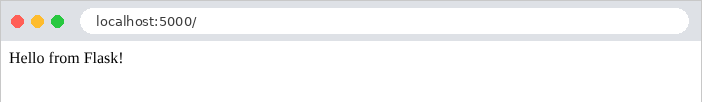
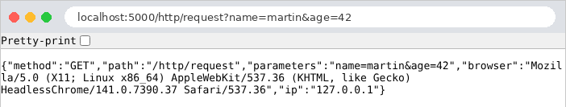

2. Actions, roteamento, respostas
Este capítulo examina o caminho percorrido por uma requisição, do navegador até a action que a trata, e a resposta devolvida por essa action. As views só serão apresentadas no Capítulo 4: aqui, as actions devolvem texto ou JSON diretamente.
2.1. Exemplo 01: a estrutura de uma aplicação Flask
O primeiro exemplo é a menor aplicação [Flask] possível: um único arquivo.
2.1.1. O arquivo app.py
Vamos analisar este código:
- linha 2: importa a classe [Flask] do pacote [flask], instalado no ambiente virtual pelo [pip]. Em [Python], um arquivo com extensão [.py] é um módulo, e um módulo só usa os nomes que importou ou definiu por conta própria (exceto as funções nativas da linguagem, como [print] ou [len]);
- linha 6: a aplicação, um objeto da classe [Flask]. Ela recebe as requisições e seleciona a função que trata cada uma. O parâmetro é o nome do módulo atual, que o [Python] guarda na variável [__name__]: o [Flask] o usa para localizar a pasta da aplicação, onde procurará mais adiante as views (pasta [templates]) e os arquivos estáticos (pasta [static]);
- linha 10: [@app.get("/")] é um decorador. Um decorador é escrito como [@expression], imediatamente antes da definição de uma função (ou de uma classe); o [Python] chama a expressão com a função como parâmetro ao executar a definição. Aqui, [app.get("/")] registra a função [index] na aplicação: ela tratará as requisições [GET /]. Isso é o roteamento. Uma função associada dessa forma a uma rota é uma action (a documentação do [Flask] a chama de view function; veja a introdução);
- linhas 11 a 13: a action devolve uma string. O valor devolvido por uma action é a resposta enviada ao navegador: o [Flask] a coloca no corpo da resposta HTTP. Por convenção, os nomes de funções ([Python]) são escritos em minúsculas, com as palavras separadas por sublinhados ([action01_post]);
- linha 17: quando o próprio arquivo é executado ([python app.py]), o [Python] atribui o valor ["__main__"] à variável [__name__]; quando o módulo é importado por outro módulo, ela recebe o nome do módulo (["app"]). Esse teste, muito comum em [Python], reserva portanto o restante do código para quando o arquivo é iniciado diretamente;
- linha 21: [app.run] inicia o [Werkzeug] servidor de desenvolvimento, que escuta as requisições na porta 5000 da máquina (5000 é o valor padrão) até ser interrompido por [Ctrl-C]. [debug=True] ativa o modo debug: o servidor monitora os arquivos da aplicação e a reinicia assim que um deles é modificado; uma exceção não tratada exibe uma página de depuração (veja o Exemplo 03). Esse modo se destina ao desenvolvimento, e somente a ele: a página de depuração permite executar código [Python] no servidor.
2.1.2. Execução
Em uma janela de terminal aberta na pasta [01-structure], com o ambiente virtual dos exemplos ativado, digite [python app.py]. O [Flask] exibe suas mensagens de inicialização:
As mensagens mostram o nome da aplicação, o modo debug, o endereço de escuta e a porta. [127.0.0.1] é o endereço da própria máquina ([localhost]): o servidor só aceita requisições dessa máquina, o que é adequado para o desenvolvimento ([app.run(host="0.0.0.0")] o abriria para as outras máquinas da rede). A linha [Restarting with stat] indica o mecanismo de recarga automática: o processo iniciado por [python app.py] apenas monitora os arquivos; ele inicia a aplicação em um processo separado, que reinicia a cada alteração. O “PIN” protege o console [Python] da página de depuração.
Há uma segunda maneira de iniciar uma aplicação: o comando [flask], instalado junto com o [Flask] no ambiente virtual:
A opção [--app] indica o módulo da aplicação ([app], isto é, o arquivo [app.py]), [run] inicia o servidor de desenvolvimento e [--debug] ativa o modo debug; [--port 5001] mudaria a porta. O próprio comando localiza, dentro do módulo, o objeto [Flask] chamado [app] (ou, como veremos no Exemplo 02, uma função chamada [create_app]). Com isso, o teste [if __name__ == "__main__"] deixa de ser necessário. Os exemplos usam [python app.py], que é mais fácil de lembrar; o estudo de caso fará o mesmo.
Vamos solicitar a URL [http://localhost:5000/] com um navegador:

e depois com o [curl]. A opção [-i] também exibe os cabeçalhos HTTP da resposta:
A primeira linha da resposta contém a versão do protocolo, o código de status (200) e seu rótulo ([OK]). Em seguida vêm os cabeçalhos: o nome do servidor, a data, o tipo do conteúdo, o tamanho do conteúdo em bytes e [Connection: close] (o servidor de desenvolvimento fecha a conexão após cada resposta). Uma linha em branco separa os cabeçalhos do corpo da resposta. No restante deste documento, não incluiremos mais os cabeçalhos [Server], [Date] e [Connection], pois eles não mudam.
O cabeçalho [Content-Type: text/html; charset=utf-8] indica que a resposta está no formato HTML, cujos caracteres são codificados em UTF-8. Essa é a codificação padrão ([Flask]) para qualquer string devolvida por uma action: o navegador, portanto, interpreta a string como HTML (aqui, sem nenhuma tag, ela é exibida como está). O Exemplo 03 mostrará como especificar outro tipo de conteúdo.
A cada requisição, o console do servidor exibe uma linha de log: o endereço do cliente, a data, a requisição e o código da resposta.
2.2. Exemplo 02: roteamento
O roteamento associa uma URL e um método (HTTP, GET, POST...) a uma action. O Exemplo 02 organiza essas actions em dois arquivos:
A pasta [controllers] é um pacote [Python] (veja a introdução). Cada um desses dois módulos define um blueprint: um grupo de rotas, que a aplicação então registra. É o equivalente, no [Flask], das classes controller do [Spring MVC] ou do [ASP.NET Core MVC].
2.2.1. A aplicação: app.py
- Linhas 4 e 5: importam os dois blueprints, os objetos [home] e [first], dos módulos [controllers/home.py] e [controllers/first.py];
- Linhas 9 a 14: a aplicação deixa de ser uma variável do módulo criada na importação; ela é construída por uma função chamada de *factory*. Essa é a abordagem recomendada pela documentação do [Flask], que todos os exemplos seguintes adotarão: a configuração da aplicação fica concentrada em um único lugar, e é possível criar várias aplicações com configurações diferentes (para testes, por exemplo). O comando [flask --app app run] reconhece essa abordagem: na ausência de uma variável [app], ele chama a função [create_app] do módulo;
- linhas 12 e 13: cada blueprint é registrado na aplicação; suas rotas passam a ser as da aplicação;
- linha 18: a aplicação é construída e, em seguida, o servidor é iniciado.
2.2.2. O blueprint "home": controllers/home.py
- linha 6: o blueprint. Seu primeiro parâmetro é seu nome, [home]: ele servirá para identificar suas actions ([home.index], veja o Exemplo 04). O segundo parâmetro, como no caso da aplicação, é o nome do módulo;
- linha 11: um blueprint tem os mesmos decoradores que a aplicação: a action [index] trata [GET /];
- linhas 13 a 23: uma string delimitada por aspas triplas pode se estender por várias linhas e conter aspas. A action devolve HTML, enviado com o tipo [text/html] (veja o Exemplo 01).
A action [index] devolve, assim, uma página HTML que contém links para as actions do outro blueprint:

2.2.3. O primeiro blueprint: controllers/first.py
Vamos analisar este código:
- linha 5: o parâmetro [url_prefix] define o prefixo comum a todas as rotas do blueprint: suas actions tratam as rotas de URL que começam por [/first];
- linhas 9 e 10: a rota [""] designa o próprio prefixo: a action [index] trata [GET /first]. A URL de uma action é a concatenação do prefixo do blueprint com o caminho de sua rota. O nome da action ([index]) pode ser o mesmo de outro blueprint: o [Flask] as distingue pelo nome do blueprint ([first.index], [home.index]);
- linhas 15 e 16: a action [action01] trata [GET /first/action01];
- linhas 21 e 22: o mesmo caminho, mas para o método POST: o decorador [post] substitui [get]. Também existem [put], [delete] e [patch], além do decorador geral [route], que aceita uma lista de métodos: [@first.route("/action01", methods=["GET", "POST"])]. Dentro de um mesmo módulo, duas funções não podem ter o mesmo nome (a segunda substituiria a primeira): daí o nome [action01_post];
- linhas 28 a 30: [<int:id>] é uma variável de caminho: esse segmento da URL pode assumir vários valores. [int] é um conversor: o segmento deve ser formado por dígitos; caso contrário, a rota não corresponde; seu valor é convertido em inteiro e depois passado ao parâmetro de mesmo nome da action, [id]. Para [/first/products/17], [id] é igual ao número 17. Isso é o binding de dados (*data binding*), que o próximo capítulo examinará em detalhe. Sem conversor ([<id>]), a variável aceita qualquer texto sem barra e continua sendo uma string. [Werkzeug] também fornece os conversores [float], [uuid] e [path], e o Exemplo 12 mostrará como escrever o seu próprio;
- linha 30: uma f-string (o prefixo [f]): cada expressão entre chaves é avaliada, e seu valor é inserido no texto;
- linhas 34 a 36: duas variáveis de caminho, passadas como dois parâmetros da action;
- linhas 41 a 43: o conversor [path] aceita qualquer final de URL, inclusive [/].
2.2.4. Execução
Aqui estão as respostas a algumas requisições:
O texto tem 30 caracteres, e a resposta também tem 30 bytes: em UTF-8, cada um desses caracteres (ASCII) ocupa um byte.
Para enviar uma requisição POST, use a opção [-X POST] do [curl]:
Um método HTTP que nenhuma action trata para esse caminho resulta em um erro 405 ([Method Not Allowed]). O cabeçalho [Allow] lista os métodos aceitos; o [Flask] acrescenta [HEAD] (a mesma requisição que GET, sem o corpo da resposta) e [OPTIONS] (a lista dos métodos aceitos), que ele mesmo trata para toda rota GET:
Por fim, uma URL que nenhuma rota trata resulta em um erro 404. É o que acontece também com um identificador que não é um inteiro: nenhuma rota corresponde a [/first/products/abc].
As respostas de erro do [Flask] (na verdade, do [Werkzeug]) são pequenas páginas HTML, em inglês. Em um navegador:

O Capítulo 7 mostrará como substituí-las por páginas próprias da aplicação. Observe também que o [Flask] distingue [/first] de [/first/]: esta última URL também produz um erro 404, pois nenhuma rota termina com uma barra. Inversamente, uma rota declarada com uma barra final ([@first.get("/list/")]) também aceita a URL sem a barra, por meio de um redirecionamento.
O comando [flask routes], executado na pasta do exemplo, lista todas as rotas da aplicação:
A coluna [Endpoint] lista o nome de cada rota: o nome do blueprint, um ponto e o nome da função. A última rota, [static], é criada pelo próprio [Flask] : ela serve os arquivos da pasta [static] da aplicação (veja o Exemplo 15).
2.3. Exemplo 03: respostas de uma action
O que uma action devolve determina a resposta HTTP. O Exemplo 03 passa em revista os principais casos. O arquivo [app.py]:
- Linhas 11 e 12: dois ajustes do provedor JSON ([app.json]) da aplicação, o objeto que converte objetos [Python] em JSON. Por padrão, ele escreve os caracteres não ASCII como sequências de escape ([é] vira [\u00e9], o que é JSON válido, mas pouco legível) e ordena as chaves dos dicionários em ordem alfabética. Mantemos os caracteres como estão e as chaves na ordem em que a action as escreveu.
O arquivo [controllers/responses.py]:
Vamos comentar este código:
- Linhas 13 a 15: a classe [Response] representa uma resposta HTTP completa. A action a constrói por conta própria: o corpo e o tipo ([mimetype]), neste caso [text/plain] (texto simples). O navegador não interpretará as tags;
- linhas 19 a 21: a mesma string, devolvida diretamente: o [Flask] a envia com o tipo [text/html], e o navegador a interpreta;
- linhas 25 a 29: uma dataclass, ou seja, uma classe em que apenas os campos e seus tipos são declarados; o decorador [@dataclass] escreve o construtor ([Person("Martin", "Jean", 42)]), a representação textual e a comparação de objetos. O Exemplo 06 voltará a esse assunto;
- linhas 33 a 35: a função [jsonify] converte seu parâmetro em JSON e gera uma resposta do tipo [application/json]. O provedor JSON do [Flask] sabe converter dicionários, listas, strings, números, booleanos, [None] (que vira [null]), além de dataclasses, datas e números [Decimal] (veja o exemplo 06);
- linhas 39 a 41: ainda mais simples: uma action que devolve um dicionário (ou uma lista, linhas 45 a 47) produz uma resposta JSON, sem chamar [jsonify]. Uma dataclass, por outro lado, precisa passar por [jsonify]: se fosse devolvida diretamente, causaria um erro (“The view function did not return a valid response”);
- linhas 51 a 53: uma action pode devolver uma tupla [(content, code)]: o código de status 201 ([Created]) substitui o código de status 200. Uma tupla também pode conter cabeçalhos: [(content, code, {"X-Example": "03"})];
- linhas 57 a 59: o código 204 ([No Content]) significa “nada a exibir”: a resposta não tem corpo;
- linhas 64 a 68: uma action assíncrona, declarada com [async def]. A palavra-chave [await] suspende a corrotina durante a espera ([asyncio.sleep]), sem bloquear o programa. O [Flask] executa a action em um loop de eventos criado para a requisição e aguarda seu resultado: isso é útil para disparar várias esperas em paralelo (várias chamadas a serviços web, por exemplo), mas não torna o próprio [Flask] assíncrono. É preciso instalar o extra [[async]] do [Flask] (veja [requirements.txt]);
- linhas 72 a 74: um erro “esperado”: a tupla [(content, 404)] devolve uma resposta 404 ([Not Found]), com um corpo (JSON) escolhido pela action;
- linhas 78 a 80: o mesmo erro, gerado pela função [abort]. [abort] não devolve nada: ela lança uma exceção ([NotFound], para o código 404), que encerra a action; o [Flask] a converte em uma resposta de erro, com a mensagem fornecida como segundo parâmetro. Essa é a forma mais comum de encerrar uma action por causa de um erro, mesmo no fundo de uma função chamada pela action;
- linhas 84 a 86: um erro “inesperado”, isto é, uma exceção que ninguém trata, produz uma resposta 500 ([Internal Server Error]).
Em um navegador, a diferença entre [text/plain] e [text/html] é visível:


Aqui estão as respostas das demais actions:
A dataclass foi convertida em um objeto JSON, com um campo por atributo. No modo debug, o JSON é exibido em várias linhas, com indentação; sem o modo debug, ele cabe em uma única linha ([{"last_name":"Martin","first_name":"Jean","age":42}]). A action [/responses/dictionary] produz exatamente o mesmo resultado.
A resposta de [abort] é a página de erro padrão do [Werkzeug], com a nossa mensagem (inserida na página após o escape: um texto inserido em HTML não pode ter a possibilidade de introduzir tags nele; voltaremos a isso).
Resta a exceção não tratada. No modo debug, o navegador exibe a página do depurador do [Werkzeug] : o tipo e a mensagem da exceção, seguidos da pilha de chamadas (a lista das funções que estavam em execução no momento do erro), da mais antiga à mais recente, com a linha de código correspondente a cada uma:

A última função da pilha é a nossa action, [exception], na linha 86 do arquivo [responses.py]. Ao clicar em uma das linhas da pilha, é possível até abrir um console [Python] no contexto dessa função, depois de informar o PIN exibido na inicialização: é por isso que o modo debug nunca deve ser ativado em um servidor acessível a outras pessoas. O console do servidor também exibe a pilha de chamadas (incluímos aqui apenas o final):
Sem o modo debug ([app.run(port=5000)]), a mesma requisição produz uma breve página de erro 500 em inglês, que não revela nada sobre o código (“Internal Server Error. The server encountered an internal error and was unable to complete your request...”); a pilha de chamadas é escrita apenas no console do servidor. O Capítulo 7 mostrará como exibir uma página de erro própria da aplicação.
2.4. Exemplo 04: redirecionamentos
Um redirecionamento é uma resposta que instrui o navegador a buscar outra URL: um código 3xx e o cabeçalho [Location], que contém o novo endereço. O navegador envia imediatamente uma segunda requisição a esse endereço. O arquivo [controllers/redirects.py]:
- linhas 8 a 10: a função [redirect] gera uma resposta de redirecionamento para o endereço indicado. O código de status 301 ([Moved Permanently]) indica que a página mudou de endereço permanentemente: o navegador (e os mecanismos de busca) podem guardar o novo endereço em cache;
- linhas 20 a 22: sem o parâmetro [code], [redirect] produz um redirecionamento temporário com o código de status 302 ([Found]). O endereço é calculado concatenando pedaços de texto, o que causa um problema que examinaremos;
- Linhas 27 a 29: a função [url_for] gera a URL de uma action, identificada por seu nome (["redirects.page"]: o blueprint, um ponto, a função), e não por seu caminho. Seus parâmetros nomeados fornecem as variáveis de caminho (aqui, [name]), corretamente codificadas para uma URL. Se um dia o caminho da rota [page] for alterado, as chamadas a [url_for] o acompanharão automaticamente;
- linhas 38 a 40: um redirecionamento para outro site.
As respostas, com o [curl] (que, sem nenhuma opção, não segue redirecionamentos):
A resposta também inclui um pequeno corpo HTML, para um cliente que não siga redirecionamentos. A opção [-L] do [curl] segue o redirecionamento, exatamente como faria um navegador:
Vamos agora comparar os dois redirecionamentos calculados, com um destino que contém um ponto de interrogação, codificado como [%3F] na URL (um [?] não codificado iniciaria os parâmetros da URL):
O [Flask] decodificou a variável de caminho antes de tratá-la: [destination] é igual a [a?b]. A primeira action a cola como está no endereço: [/page/a?b], que o navegador interpreta como o caminho [/page/a] seguido do parâmetro [b]. A segunda passa por [url_for], que a codifica novamente: [/page/a%3Fb]. Seguindo os redirecionamentos:
Somente a segunda leva à página correta. Daí a regra: um endereço que contém um valor variável é gerado com [url_for], nunca por concatenação de strings. No navegador, apenas a página final é visível; a barra de endereço exibe a nova URL:

Existem outros dois códigos de redirecionamento: 303 ([See Other]) e 307 ([Temporary Redirect]), que se obtêm com [redirect(url, code=303)]. Após uma requisição POST, os códigos 302 e 303 fazem o navegador enviar uma requisição GET ao novo endereço, ao passo que o 307 (e o 308, sua versão permanente) o fazem repetir a requisição POST. O Exemplo 20 usará o redirecionamento após um POST.
2.5. Exemplo 05: os objetos de requisição e de resposta
Até agora, as actions só recebiam variáveis de caminho e devolviam um valor que o [Flask] convertia em resposta. Uma action também pode acessar a requisição atual e construir ela mesma a resposta. O arquivo [controllers/http.py]:
- Linha 4: importação do objeto [request]. No [Flask], a requisição atual não é um parâmetro da action: é um objeto global, [request], importado do pacote [flask]. Como um objeto global pode designar a requisição atual, se o servidor trata várias requisições simultaneamente em várias threads (fluxos de execução paralelos)? [request] funciona como um proxy: a cada uso, ele repassa a operação à requisição da thread atual. O [Flask] chama isso de contexto de requisição: enquanto uma requisição está sendo tratada, [request] designa essa requisição específica. Fora do tratamento de uma requisição, usá-lo causa um erro (“Working outside of request context”);
- linhas 14 a 20: algumas propriedades da requisição: seu método HTTP, seu caminho, seus parâmetros brutos (a parte da URL que segue o [?], em forma de bytes, que [decode] converte em texto), seus cabeçalhos ([request.headers], um dicionário, cujo método [get] devolve [None] para um cabeçalho ausente), o endereço IP do cliente. Os parâmetros, um a um, serão tratados no próximo capítulo;
- linhas 26 a 30: a função [make_response] constrói o objeto de resposta (um [Response]) a partir do que a action devolveria (aqui, uma string); a action pode então modificá-lo antes de devolvê-lo. Um cabeçalho [X-Example] é adicionado a ele (por convenção, os cabeçalhos específicos de uma aplicação costumam começar por [X-]);
- linhas 34 a 37: a resposta “montada à mão”: o corpo, o código de status e o tipo;
- linhas 42 a 50: uma resposta enviada em partes (*streaming*). A função [chunks] é um gerador: cada [yield] produz uma parte do corpo. Como a resposta é construída com um gerador, seu tamanho não é conhecido de antemão: o servidor envia o código de status e os cabeçalhos e, depois, cada parte assim que ela é produzida. Isso é útil para uma resposta muito longa, gerada aos poucos. Mas, depois que a primeira parte foi enviada, o código de status não pode mais mudar: aqui, o gerador lança uma exceção após a primeira parte. É o erro a evitar: uma resposta que já começou não pode se tornar uma resposta de erro.
Respostas:
(As aspas em torno de "URL" impedem que o terminal interprete o caractere "[&]".) Em um navegador, o cabeçalho [User-Agent] é o do navegador; o [Chrome] exibe o JSON bruto, com uma caixa de seleção que o indenta:

O cabeçalho [Transfer-Encoding: chunked] substitui [Content-Length]: o corpo chega em partes, cada uma precedida de seu tamanho. Após um segundo, a resposta é interrompida: o [curl] recebeu um código de status 200 e um corpo truncado, sem nenhuma forma de saber que ocorreu um erro. Somente o console do servidor indica isso:
2.6. Exemplo 06: serviços compartilhados e injeção de dependência
Uma action não deve conter a lógica da aplicação em si; ela a delega a serviços, objetos que sabem executar uma tarefa específica (ler produtos, calcular um carrinho de compras etc.). Várias actions costumam usar o mesmo serviço. No [Spring] ou no [ASP.NET Core], um contêiner de injeção de dependência cria os serviços e os fornece automaticamente a quem precisa deles. O [Flask] não tem contêiner: a factory da aplicação cria os serviços, e as actions os solicitam à aplicação. O Exemplo 06 organiza seu código por domínio (produtos, clientes) e não por tipo (controllers, modelos):
2.6.1. O produto
- Linha 8: uma dataclass (veja o Exemplo 03). Com [frozen=True], o objeto é imutável: seus campos são definidos pelo construtor, e qualquer tentativa de modificá-los ([p.price = 2]) lança uma exceção. Um objeto imutável pode ser compartilhado com segurança entre várias requisições;
- Linhas 10 a 12: os campos, com seus tipos. Os tipos não são verificados pelo [Python] em tempo de execução: são anotações lidas por ferramentas de análise (como a do [Visual Studio Code]) e por certas bibliotecas ([Pydantic], tratado no próximo capítulo). O preço é um [Decimal], um número decimal exato: um [float] não consegue representar com exatidão 0,1 ou 3,2 (em binário, esses números têm infinitos dígitos), e uma soma de preços em [float] pode resultar em 5.500000000000001.
2.6.2. O contrato do serviço: service.py
- Linhas 11 a 18: o contrato do serviço, isto é, o que ele sabe fazer, sem dizer como. Em [Python], um contrato é definido por uma classe abstrata: uma classe que herda de [ABC] ([Abstract Base Class]) e cujos métodos marcados com [@abstractmethod] não têm corpo (as reticências [...] servem de corpo vazio). Não é possível criar um objeto dessa classe; uma subclasse deve sobrescrever todos os seus métodos abstratos. Isso equivale às interfaces do [Java] e do [C#];
- linha 14: a anotação do tipo devolvido pelo método (após [->]): uma lista de produtos. [self] é o objeto sobre o qual o método é chamado (o equivalente de [this] em [Java]), sempre listado como primeiro parâmetro;
- linha 18: [Product | None]: um produto, ou [None] se ele não existir;
- Linhas 23 e 24: a função que fornece o serviço às actions. [current_app] é, como [request], um proxy: ele designa a aplicação que trata a requisição atual. [app.extensions] é um dicionário que o [Flask] disponibiliza às extensões (as bibliotecas que se acrescentam ao [Flask]) para que guardem ali seus objetos; nós o usamos para nossos próprios serviços. A função também declara o tipo do serviço ([-> ProductsService]): o [Visual Studio Code] pode então sugerir seus métodos.
2.6.3. A implementação: in_memory_service.py
- linha 8: a classe herda o contrato e redefine seus dois métodos;
- linhas 10 a 15: [__init__] é o construtor da classe. Ele guarda os produtos no atributo [_products] do objeto; o sublinhado inicial indica, por convenção, um atributo privado que o código externo à classe não deve usar. Os produtos estão em uma tupla (entre parênteses): uma sequência imutável. O preço é construído a partir de uma string ([Decimal("1.5")]): construído a partir do [float] 1.5, ele herdaria suas imprecisões;
- linhas 18 e 19: o método devolve uma nova lista, uma cópia da tupla: quem a chama pode modificá-la sem afetar os dados do serviço;
- linhas 21 a 23: [(p for p in self._products if p.id == id)] é uma expressão geradora: ela produz, um a um, os produtos cujo id corresponde ao solicitado. [next] devolve o primeiro elemento produzido ou o valor padrão, [None], se não houver nenhum.
2.6.4. O blueprint de produtos: controller.py
- Linha 4: o blueprint conhece apenas o contrato do serviço (o módulo [service]), e não sua implementação: ele ignora que os produtos estão na memória;
- Linhas 10 a 12: a action solicita o serviço à aplicação e depois lhe delega o trabalho. [jsonify] converte a lista de dataclasses em um array JSON;
- linhas 16 a 20: um produto desconhecido devolve uma resposta 404, com uma mensagem em JSON.
2.6.5. O blueprint de clientes: controller.py
- linhas 14 a 17: o conteúdo do carrinho de compras, devolvido em JSON;
- linha 22: esse blueprint usa o mesmo serviço que o blueprint de produtos: um único objeto, compartilhado;
- linha 24: [sum] soma os elementos de um iterável; seu parâmetro [start] é o valor inicial da soma (0 por padrão). Começar com [Decimal(0)] em vez do inteiro 0 não é essencial (um inteiro e um [Decimal] se somam), mas garante um resultado do tipo [Decimal] mesmo para um carrinho de compras vazio.
2.6.6. A declaração do serviço: app.py
- Linha 17: é aqui, e somente aqui, que a implementação do serviço é escolhida. O serviço é criado uma única vez, na inicialização, e o mesmo objeto atende a todas as requisições de todos os usuários: é um singleton (o escopo padrão dos beans do [Spring]). Para passar a uma implementação que lê de um banco de dados, bastaria mudar esta linha: os blueprints, que só conhecem o contrato, permaneceriam inalterados. Esse é todo o objetivo da injeção de dependência, mesmo implementada “à mão”: cada parte da aplicação depende de contratos, e um único lugar determina as implementações.
Um serviço compartilhado por todas as requisições precisa ser capaz de ser usado simultaneamente por várias requisições: o servidor de desenvolvimento trata cada requisição em sua própria thread. Isso não causa problema aqui: o serviço apenas lê dados que nunca mudam. O Exemplo 20 mostrará um serviço cujos dados mudam e as precauções que isso exige.
2.6.7. Execução
Os preços se tornaram strings (["1.5"]): o JSON tem apenas um tipo numérico, que a maioria dos programas interpreta como número de ponto flutuante; por isso o provedor JSON do [Flask] converte um [Decimal] em string para preservar sua precisão.